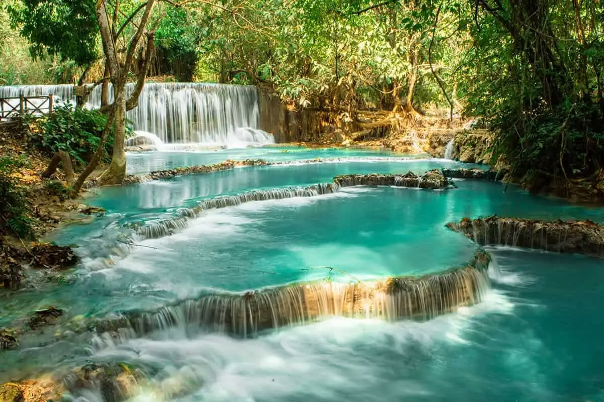
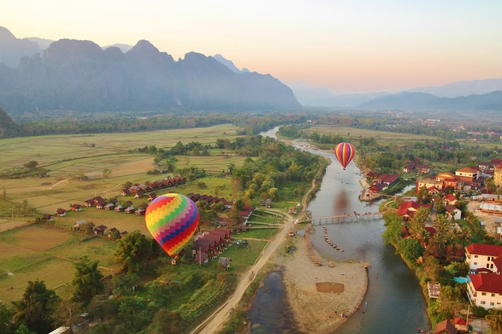
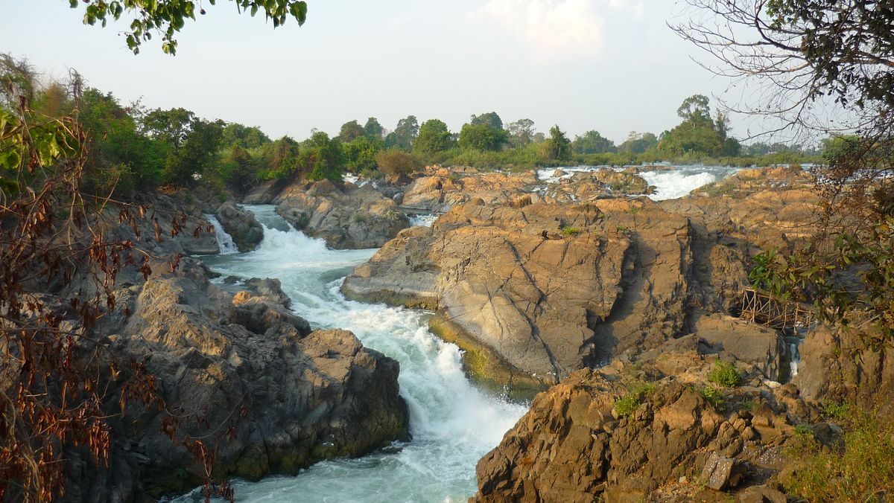
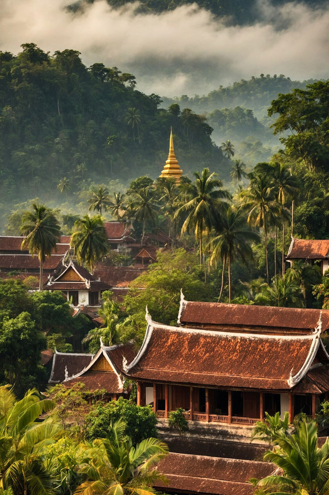
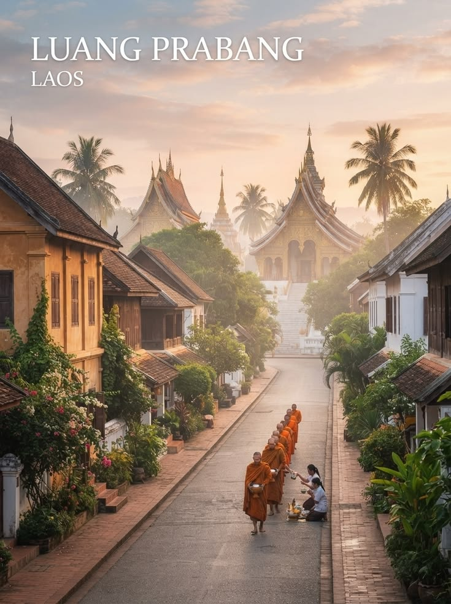
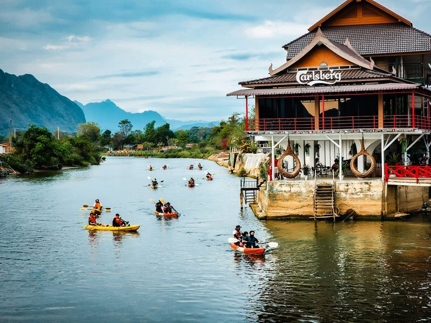
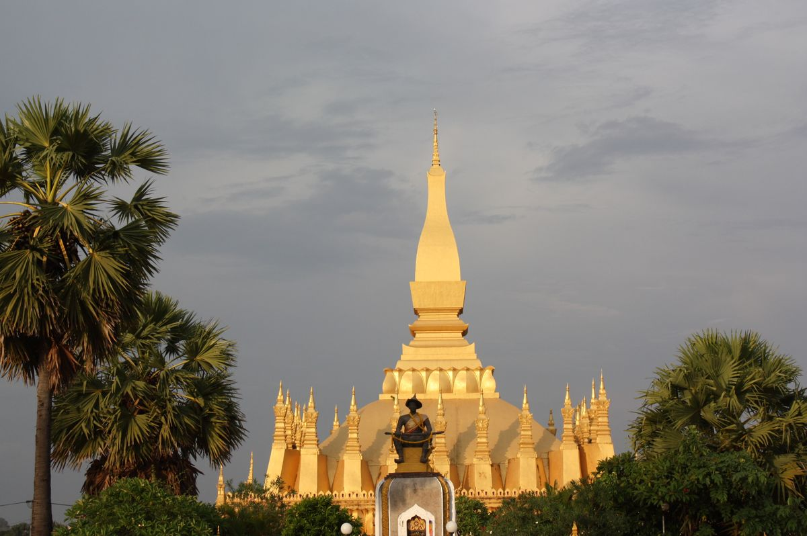
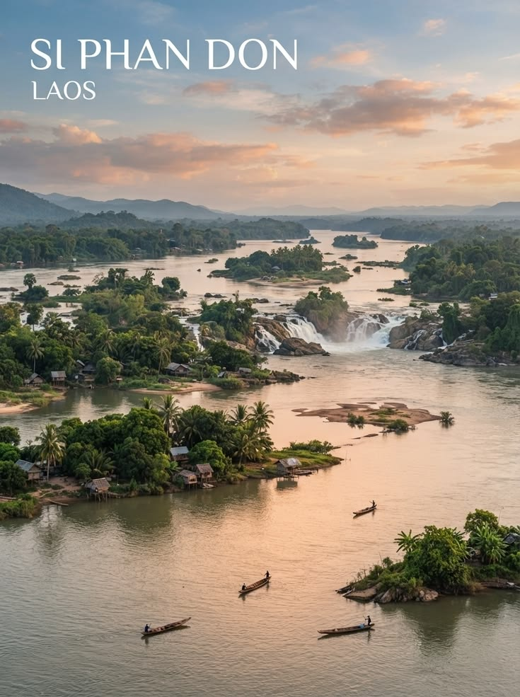
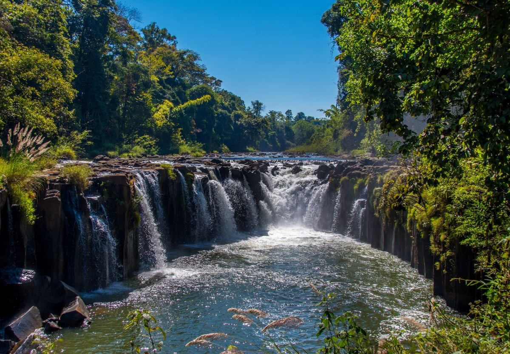
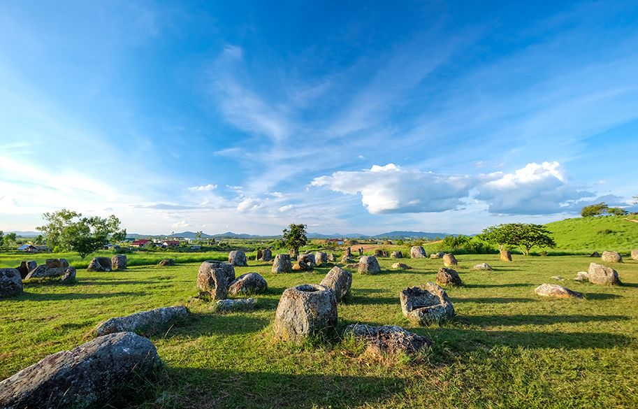

Featured · Luang PrabangA curated look at the mountains, rivers, and quiet mornings of my home country — chosen to show the Laos I know best.

Vang Vieng
Si Phan Don
Laos is my home, and I want more people to discover its beauty. Although I am currently studying Information Technology in Vietnam, I have always been proud of my country and its unique culture.
This page introduces some of my favorite destinations in Laos. From peaceful temples and beautiful waterfalls to breathtaking mountains and rivers, each place reflects the natural beauty and traditions of my homeland.
I hope this website helps visitors learn more about Laos and inspires them to experience its culture, delicious food, and warm hospitality someday.

Must-seeGolden temples, morning alms-giving, and the meeting point of the Mekong and Nam Khan rivers.
Explore →
NatureLimestone karsts, the Nam Song river, and blue lagoons perfect for a slow afternoon.
Explore →
CapitalA quiet capital city with French-colonial streets, riverside cafés, and Pha That Luang.
Explore →
IslandsSlow river life, waterfalls, and rare Irrawaddy dolphins near the Cambodian border.
Explore →
My hometownCoffee farms and waterfalls just outside Pakse — where I'm from.
Explore →
HeritageA UNESCO World Heritage site scattered with mysterious ancient stone jars.
Explore →